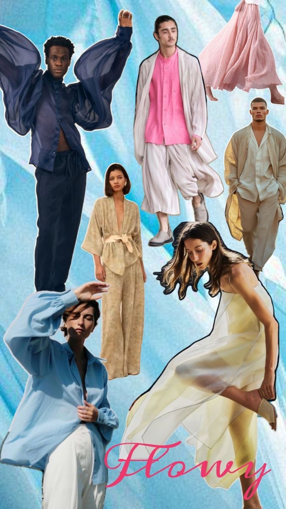

Rosanna & Yuji
.png)
Q & A
What is the dresscode?
Floral, Flowy, or Funky
Pick your vibe or mix them all—
🌸 Floral – Embrace nature with flowers or botanical prints.
(Think: a floral dress, a Hawaiian shirt, or a leafy-patterned jumpsuit.)
🌬️ Flowy – Breezy fabrics and relaxed silhouettes.
(Think: a maxi dress, wide-leg pants, or a billowy blouse.)
ğŸ Funky – Bold colors, quirky accessories, or something unexpected!
(Think: statement socks, patterned suits, or a hot pink dress.)
No need to buy anything new—just get creative with what’s in your closet. We can’t wait to celebrate with you in style!

Are children invited?
We love your little ones, but this will be an adults-only celebration. We hope you can enjoy a night without them!
Will the wedding be indoors or outdoors?
The ceremony will be inside the church, while dinner and dancing will take place in the greenhouse at Backagården. As it can get cooler in the evening, we recommend bringing something warmer. Since the stone floor is a bit uneven, comfy shoes are a good idea for dancing. If the weather is nice, feel free to mingle in the garden too!
Can I take photos during the wedding?
We love that you want to capture the memories, but we kindly ask that you leave the photos to our professional photographer during the ceremony and as we exit the church. We’d love for you to fully enjoy the moment without distractions. Don’t worry – our photographer will capture all the beautiful memories, and we can’t wait to share them with you! Of course, feel free to take photos at the reception and throughout the evening!
Why are you asking in the RSVP if I will drink alcohol?
Since we pay per person for alcohol, we're just making sure we have enough for everyone! If you’re unsure, just say "yes"—we’d rather have extra drinks than not enough to go around!
What is the latest RSVP date?
Please let us know by June 1st, 2025 so we can finalize all the details and make sure everything is perfect for the big day!
I want to give a speech, who should I contact?
Please reach out to one of our two wonderful toastmasters, who will be coordinating the speeches during the reception.
Write contact info to dad
Write contact info to Nina
日本èªã®æƒ…å ±(Information in Japanese)
軽ã日本èªã§èª¬æ˜ã™ã‚‹ã€æ—¥æœ¬èªã§èª¬æ˜ãŒå¿…è¦ãªå ´åˆã¯èª°ã«èã‘ã°ã„ã„ãªã©ã€‚